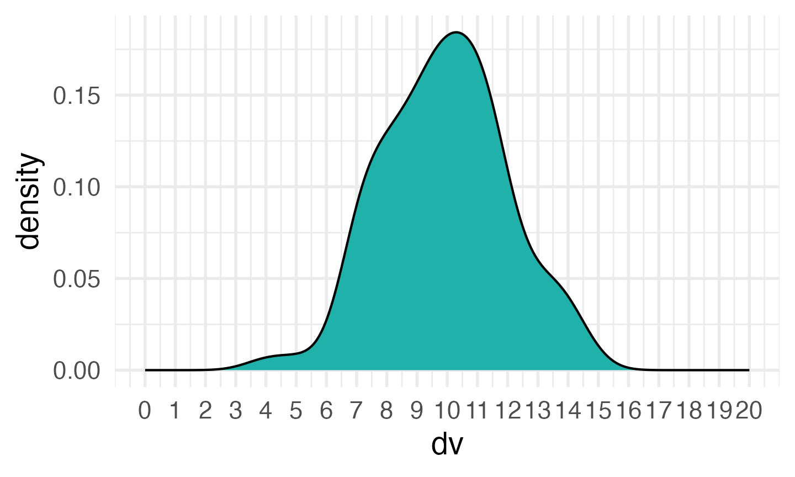

library(tidyverse)
library(faux)
library(afex) # for anova and lmer
library(broom)
library(broom.mixed) # to make tidy tables of lmer output
theme_set(theme_minimal(base_size = 14))Simulation functions
The functions below are commonly used when you’re setting up a simulated dataset.
Repeating
The function rep() lets you repeat the first argument a
number of times.
Use rep() to create a vector of alternating
"A" and "B" values of length 24.
rep(c("A", "B"), times = 12)
## [1] "A" "B" "A" "B" "A" "B" "A" "B" "A" "B" "A" "B" "A" "B" "A" "B" "A" "B" "A"
## [20] "B" "A" "B" "A" "B"If the second argument is a vector that is the same length as the
first argument, each element in the first vector is repeated that many
times. Use rep() to create a vector of 11 "A"
values followed by 3 "B" values.
You can repeat each element of the vector a specified number of times
using the each argument, Use rep() to create a
vector of 12 "A" values followed by 12 "B"
values.
rep(c("A", "B"), each = 12)
## [1] "A" "A" "A" "A" "A" "A" "A" "A" "A" "A" "A" "A" "B" "B" "B" "B" "B" "B" "B"
## [20] "B" "B" "B" "B" "B"What do you think will happen if you set times to 3 and
each to 2?
Sequences
The function seq() is useful for generating a sequence
of numbers with some pattern.
Use seq() to create a vector of the integers 0 to
10.
seq(0, 10)
## [1] 0 1 2 3 4 5 6 7 8 9 10You can set the by argument to count by numbers other
than 1 (the default). Use seq() to create a vector of the
numbers 0 to 100 by 10s.
seq(0, 100, by = 10)
## [1] 0 10 20 30 40 50 60 70 80 90 100The argument length.out is useful if you know how many
steps you want to divide something into. Use seq() to
create a vector that starts with 0, ends with 100, and has 12 equally
spaced steps (hint: how many numbers would be in a vector with 2
steps?).
seq(0, 100, length.out = 13)
## [1] 0.000000 8.333333 16.666667 25.000000 33.333333 41.666667
## [7] 50.000000 58.333333 66.666667 75.000000 83.333333 91.666667
## [13] 100.000000Uniform Distribution
The uniform distribution is the simplest distribution. All numbers in
the range have an equal probability of being sampled. Use
runif() to sample from a continuous uniform
distribution.
runif(n = 10, min = 0, max = 1)
## [1] 0.1594836 0.4781883 0.7647987 0.7696877 0.2685485 0.6730459 0.9787908
## [8] 0.8463270 0.8566562 0.4451601Pipe the result to hist() to make a quick histogram of
your simulated data.
Discrete Distribution
You can use sample() to simulate events like rolling
dice or choosing from a deck of cards. The code below simulates rolling
a 6-sided die 10000 times. We set replace to
TRUE so that each event is independent. See what happens if
you set replace to FALSE.

Distribution of dice rolls.
You can also use sample to sample from a list of named outcomes.
pet_types <- c("cat", "dog", "ferret", "bird", "fish")
sample(pet_types, 10, replace = TRUE)
## [1] "dog" "fish" "cat" "fish" "bird" "bird" "fish" "ferret"
## [9] "ferret" "bird"Ferrets, while the best pet, are a much less common pet than cats and
dogs, so our sample isn’t very realistic. You can set the probabilities
of each item in the list with the prob argument.
Binomial Distribution
The rbinom function will generate a random binomial
distribution.
-
n= number of observations -
size= number of trials -
prob= probability of success on each trial
Coin flips are a typical example of a binomial distribution, where we can assign heads to 1 and tails to 0.
# 20 individual coin flips of a fair coin
rbinom(20, 1, 0.5)
## [1] 0 1 1 0 0 0 1 0 1 0 0 0 0 1 0 1 0 0 0 1
# 20 individual coin flips of a baised (0.75) coin
rbinom(20, 1, 0.75)
## [1] 1 1 1 0 1 1 1 1 1 1 1 1 1 0 1 1 1 1 0 1You can generate the total number of heads in 1 set of 20 coin flips
by setting size to 20 and n to 1.
# 1 set of 20 fair coin flips
rbinom(1, 20, 0.75)
## [1] 13You can generate more sets of 20 coin flips by increasing the
n.
# 10 sets of 20 fair coin flips
rbinom(10, 20, 0.5)
## [1] 12 7 10 11 11 8 11 7 12 8Normal Distribution
We can simulate a normal distribution of size n if we
know the mean and standard deviation (sd).
# 10 samples from a normal distribution with a mean of 0 and SD of 1
rnorm(10, 0, 1)
## [1] -0.3230057 0.7213149 0.4248971 1.4033239 -0.6881243 -0.2737261
## [7] -0.1539815 -0.3908546 -0.3301087 1.7890306A density plot is usually the best way to visualise this type of data.
# 100 samples from a normal distribution with a mean of 10 and SD of 2
dv <- rnorm(100, 10, 2)
# use sample to get a random colour
fill_colour <- sample(colours(), 1)
ggplot() +
geom_density(aes(dv), fill = fill_colour) +
scale_x_continuous(
limits = c(0,20),
breaks = seq(0,20)
)
Run the simulation above several times, noting how the density plot
changes. Try changing the values of n, mean,
and sd.
Independent samples
Now we’re ready to start simulating some data. Let’s start with a simple independent-samples design where the variables are from a normal distribution. Each subject produces one score (in condition A or B). What we need to know about these scores is:
- How many subjects are in each condition?
- What are the score means?
- What are the score variances (or SDs)?
Parameters
First, set parameters for these values. This way, you can use these variables wherever you need them in the rest of the code and you can easily change them.
A_sub_n <- 50
B_sub_n <- 50
A_mean <- 10
B_mean <- 11
A_sd <- 2.5
B_sd <- 2.5Scores
We can the generate the scores using the rnorm()
function.
You can stop here and just analyse your simulated data with
t.test(A_scores, B_scores), but usually you want to get
your simulated data into a data table that looks like what you might
eventually import from a CSV file with your actual experimental
data.
dat <- tibble(
sub_condition = rep( c("A", "B"), c(A_sub_n, B_sub_n) ),
score = c(A_scores, B_scores)
)If you’re simulating data for a script where you will eventually import data from a csv file, you can save these data to a csv file and then re-read them in, so when you get your real data, all you need to do is comment out the simulation steps.
# make a data directory if there isn't one already
if (!dir.exists("data")) dir.create("data")
# save your simulated data
write_csv(dat, "data/sim-data-ind-samples.csv")
# start your analysis here
dat <- read_csv("data/sim-data-ind-samples.csv")
## Rows: 100 Columns: 2
## ── Column specification ────────────────────────────────────────────────────────
## Delimiter: ","
## chr (1): sub_condition
## dbl (1): score
##
## ℹ Use `spec()` to retrieve the full column specification for this data.
## ℹ Specify the column types or set `show_col_types = FALSE` to quiet this message.Check your data
Always examine your simulated data after you generate it to make sure it looks like you want.
Analysis
t.test(score~sub_condition, dat)
##
## Welch Two Sample t-test
##
## data: score by sub_condition
## t = -0.99215, df = 97.577, p-value = 0.3236
## alternative hypothesis: true difference in means between group A and group B is not equal to 0
## 95 percent confidence interval:
## -1.4645314 0.4882661
## sample estimates:
## mean in group A mean in group B
## 10.31599 10.80412Function
You can wrap all this in a function so you can run it many times to do a power calculation. Put all your parameters as arguments to the function.
ind_sim <- function(A_sub_n, B_sub_n,
A_mean, B_mean,
A_sd, B_sd) {
# simulate data for groups A and B
A_scores <- rnorm(A_sub_n, A_mean, A_sd)
B_scores <- rnorm(B_sub_n, B_mean, B_sd)
# put the data into a table
dat <- tibble(
sub_condition = rep( c("A", "B"), c(A_sub_n, B_sub_n) ),
score = c(A_scores, B_scores)
)
# analyse the data
t <- t.test(score~sub_condition, dat)
# return a list of the values you care about
# the double brackets ([[]]) get rid of the name of named numbers
list(
t = t$statistic[[1]],
ci_lower = t$conf.int[[1]],
ci_upper = t$conf.int[[2]],
p = t$p.value[[1]],
estimate = t$estimate[[1]] - t$estimate[[2]]
)
}Now run your new function with the values you used above.
# str() prints the resulting list in a shorter format
ind_sim(50, 50, 10, 11, 2.5, 2.5) %>% str()
## List of 5
## $ t : num -2.18
## $ ci_lower: num -2.11
## $ ci_upper: num -0.101
## $ p : num 0.0314
## $ estimate: num -1.1Now you can use this function to run many simulations. The function
map_df from the purrr package (loaded with
tidyverse) is one of many ways to run a function many times
and organise the results into a table.
mysim <- map_df(1:1000, ~ind_sim(50, 50, 10, 11, 2.5, 2.5))Now you can graph the data from your simulations.
# set boundary = 0 when plotting p-values
ggplot(mysim, aes(p)) +
geom_histogram(binwidth = 0.05, boundary = 0,
fill = "white", colour = "black")
mysim %>%
gather(stat, value, t:estimate) %>%
ggplot() +
geom_density(aes(value, color = stat), show.legend = FALSE) +
facet_wrap(~stat, scales = "free")Distribution of results from simulated independent samples data
You can calculate power as the proportion of simulations on which the p-value was less than your alpha.
alpha <- 0.05
power <- mean(mysim$p < alpha)
power
## [1] 0.474Paired samples
Now let’s try a paired-samples design where the variables are from a normal distribution. Each subject produces two scores (in conditions A and B). What we need to know about these two scores is:
- How many subjects?
- What are the score means?
- What are the score variances (or SDs)?
- What is the correlation between the scores?
Correlated Scores
You can then use rnorm_multi() to generate a data table
with simulated values for correlated scores:
dat <- faux::rnorm_multi(
n = sub_n,
vars = 2,
r = AB_r,
mu = c(A_mean, B_mean),
sd = c(A_sd, B_sd),
varnames = c("A", "B")
)You can also do this using the MASS::mvrnorm function,
but faux::rnorm_multi is easier when you have more
variables to simulate.
# make the correlation matrix
cormat <- matrix(c( 1, AB_r,
AB_r, 1),
nrow = 2, byrow = TRUE)
# make a corresponding matrix of the variance
# (multiply the SDs for each cell)
varmat <- matrix(c(A_sd * A_sd, A_sd * B_sd,
A_sd * B_sd, B_sd * B_sd),
nrow = 2, byrow = TRUE)
# create correlated variables with the specified parameters
S <- MASS::mvrnorm(n = sub_n,
mu = c(A_mean, B_mean),
Sigma = cormat * varmat)
dat <- data.frame(
A = S[, 1],
B = S[, 2]
)Check your data
Now check your data; faux has a function
get_params() that gives you the correlation table, means,
and SDs for each numeric column in a data table.
faux::get_params(dat)
## n var A B mean sd
## 1 100 A 1.00 0.49 10.09 2.57
## 2 100 B 0.49 1.00 11.27 2.50Analysis
# paired-samples t-test
t.test(dat$A, dat$B, paired = TRUE)
##
## Paired t-test
##
## data: dat$A and dat$B
## t = -4.6022, df = 99, p-value = 1.242e-05
## alternative hypothesis: true mean difference is not equal to 0
## 95 percent confidence interval:
## -1.6843022 -0.6694754
## sample estimates:
## mean difference
## -1.176889Function
paired_sim <- function(sub_n, A_mean, B_mean, A_sd, B_sd, AB_r) {
dat <- faux::rnorm_multi(
n = sub_n,
vars = 2,
r = AB_r,
mu = c(A_mean, B_mean),
sd = c(A_sd, B_sd),
varnames = c("A", "B")
)
t <- t.test(dat$A, dat$B, paired = TRUE)
# return just the values you care about
list(
t = t$statistic[[1]],
ci_lower = t$conf.int[[1]],
ci_upper = t$conf.int[[2]],
p = t$p.value[[1]],
estimate = t$estimate[[1]]
)
}Run 1000 simulations and graph the results.
mysim_p <- map_df(1:1000, ~paired_sim(100, 10, 11, 2.5, 2.5, .5))
mysim_p %>%
gather(stat, value, t:estimate) %>%
ggplot() +
geom_density(aes(value, color = stat), show.legend = FALSE) +
facet_wrap(~stat, scales = "free")Distribution of results from simulated paired samples data
alpha <- 0.05
power <- mean(mysim_p$p < alpha)
power
## [1] 0.983Intercept model
Now I’m going to show you a different way to simulate the same design. This might seem excessively complicated, but you will need this pattern when you start simulating data for mixed effects models.
Parameters
Remember, we used the following parameters to set up our simulation above:
sub_n <- 100
A_mean <- 10
B_mean <- 11
A_sd <- 2.5
B_sd <- 2.5
AB_r <- 0.5From these, we can calculate the grand intercept (the overall mean regardless of condition), and the effect of condition (the mean of B minus A).
grand_i <- (A_mean + B_mean)/2
AB_effect <- B_mean - A_meanWe also need to think about variance a little differently. First, calculate the pooled variance as the mean of the variances for A and B (remember, variance is SD squared).
pooled_var <- (A_sd^2 + B_sd^2)/2The variance of the subject intercepts is r times this
pooled variance and the error variance is what is left over. We take the
square root (sqrt()) to set the subject intercept and error
SDs for simulation later.
Subject intercepts
Now we use these variables to create a data table for our subjects.
Each subject gets an ID and a random intercept
(sub_i). The intercept is simulated from a random normal
distribution with a mean of 0 and an SD of sub_sd. This
represents how much higher or lower than the average score each subject
tends to be (regardless of condition).
Observations
Next, set up a table where each row represents one observation. We’ll
use one of my favourite functions for simulation:
crossing(). This creates every possible combination of the
listed factors (it works the same as expand.grid(), but the
results are in a more intuitive order). Here, we’re using it to create a
row for each subject in each condition, since this is a fully
within-subjects design.
Calculate the score
Next, we join the subject table so each row has the information about the subject’s random intercept and then calculate the score. I’ve done it in a few steps below for clarity. The score is just the sum of:
- the overall mean (
grand_i) - the subject-specific intercept (
sub_i) - the effect (
effect): the numeric code for condition (condition.e) multiplied by the effect of condition (AB_effect) - the error term (simulated from a normal distribution with mean of 0
and SD of
error_sd)
dat <- obs %>%
left_join(sub, by = "sub_id") %>%
mutate(
condition.e = recode(condition, "A" = -0.5, "B" = 0.5),
effect = AB_effect * condition.e,
error = rnorm(nrow(.), 0, error_sd),
score = grand_i + sub_i + effect + error
)Use get_params to check the data. With data in long
format, you need to specify the columns that contain the id, dv, and
within-id variables.
# check the data
faux::get_params(dat,
id = "sub_id",
dv = "score",
within = "condition")
## n var A B mean sd
## 1 100 A 1.00 0.59 9.68 2.40
## 2 100 B 0.59 1.00 10.33 2.58You can use the following code to put the data table into a more familiar “wide” format.
Analyses
You can analyse the data with a paired-samples t-test from the wide format:
# paired-samples t-test from dat_wide
t.test(dat_wide$A, dat_wide$B, paired = TRUE)
##
## Paired t-test
##
## data: dat_wide$A and dat_wide$B
## t = -2.8648, df = 99, p-value = 0.005095
## alternative hypothesis: true mean difference is not equal to 0
## 95 percent confidence interval:
## -1.0923496 -0.1983759
## sample estimates:
## mean difference
## -0.6453628Or in the long format:
# paired-samples t-test from dat (long)
t.test(score ~ condition, dat, paired = TRUE)
##
## Paired t-test
##
## data: score by condition
## t = -2.8648, df = 99, p-value = 0.005095
## alternative hypothesis: true mean difference is not equal to 0
## 95 percent confidence interval:
## -1.0923496 -0.1983759
## sample estimates:
## mean difference
## -0.6453628You can analyse the data with ANOVA using the aov_4()
function from afex. (Notice how the F-value is the square
of the t-value above.)
# anova using afex::aov_4
aov <- afex::aov_4(score ~ (condition | sub_id), data = dat)
aov$anova_table
## Anova Table (Type 3 tests)
##
## Response: score
## num Df den Df MSE F ges Pr(>F)
## condition 1 99 2.5373 8.2072 0.016676 0.005095 **
## ---
## Signif. codes: 0 '***' 0.001 '**' 0.01 '*' 0.05 '.' 0.1 ' ' 1You can even analyse the data with a mixed effects model using the
lmer function (the afex version gives you
p-values, but the lme4 version does not).
# mixed effect model using afex::lmer
lmem <- afex::lmer(score ~ condition.e + (1 | sub_id), data = dat)
# displays a tidy table of the fixed effects
broom.mixed::tidy(lmem, effects = "fixed")
## # A tibble: 2 × 7
## effect term estimate std.error statistic df p.value
## <chr> <chr> <dbl> <dbl> <dbl> <dbl> <dbl>
## 1 fixed (Intercept) 10.0 0.222 45.0 99.0 9.08e-68
## 2 fixed condition.e 0.645 0.225 2.86 99.0 5.10e- 3Simulate a dataset from an analysis
Simulate a dataset from the parameters of an analysis. We’ll use the
built-in dataset mtcars to predict miles per gallon
(mpg) from transmission type (am) and engine
type (vs).
model <- lm(mpg ~ am * vs, data = mtcars)
broom::tidy(model)
## # A tibble: 4 × 5
## term estimate std.error statistic p.value
## <chr> <dbl> <dbl> <dbl> <dbl>
## 1 (Intercept) 15.0 1.00 15.0 6.34e-15
## 2 am 4.70 1.74 2.71 1.14e- 2
## 3 vs 5.69 1.65 3.45 1.80e- 3
## 4 am:vs 2.93 2.54 1.15 2.59e- 1Simulate
We can now simulate a dataset with 50 observations from each
transmission type (am) and engine type (vs)
combination, then use the model parameters to generate predicted values
for mpg.
err_sd <- sigma(model) # SD of the error term from the model
fx <- coefficients(model) # fixed effect coefficients
sim_mtcars <- tibble(
am = rep(c(0, 0, 1, 1), each = 50),
vs = rep(c(0, 1, 0, 1), each = 50)
) %>%
mutate(err = rnorm(200, 0, err_sd),
mpg = fx[1] +
fx["am"]*am +
fx["vs"]*vs +
fx["am:vs"]*am*vs + err)
Analyse the simulated data with lm() and output the
results as a table using broom::tidy()
sim_model <- lm(mpg ~ am * vs, data = sim_mtcars)
broom::tidy(sim_model)
## # A tibble: 4 × 5
## term estimate std.error statistic p.value
## <chr> <dbl> <dbl> <dbl> <dbl>
## 1 (Intercept) 14.8 0.523 28.3 3.18e-71
## 2 am 5.61 0.739 7.60 1.21e-12
## 3 vs 6.62 0.739 8.95 2.67e-16
## 4 am:vs 1.96 1.05 1.87 6.24e- 2Function
carsim <- function(n, b0, b_am, b_vs, b_am_vs, err_sd) {
sim_mtcars <- tibble(
am = rep(c(0, 0, 1, 1), each = n),
vs = rep(c(0, 1, 0, 1), each = n)
) %>%
mutate(err = rnorm(n*4, 0, err_sd),
mpg = b0 + b_am*am + b_vs*vs + b_am_vs*am*vs + err)
sim_model <- lm(mpg ~ am * vs, data = sim_mtcars)
broom::tidy(sim_model)
}Run the function with the values from the original model, but cut the fixed effect sizes in half.
err_sd <- sigma(model)
fx2 <- coefficients(model)/2
carsim(50, fx2[1], fx2[2], fx2[3], fx2[4], err_sd)
## # A tibble: 4 × 5
## term estimate std.error statistic p.value
## <chr> <dbl> <dbl> <dbl> <dbl>
## 1 (Intercept) 7.25 0.535 13.5 6.06e-30
## 2 am 2.78 0.757 3.67 3.11e- 4
## 3 vs 3.97 0.757 5.25 3.95e- 7
## 4 am:vs -0.200 1.07 -0.187 8.52e- 1Repeat this 100 time and calculate power for each effect.
Exercises
Using the dataset below, predict moral disgust from the
interaction between pathogen and sexual
disgust using lm().
disgust <- read_csv("https://psyteachr.github.io/msc-data-skills/data/disgust_scores.csv")
## Rows: 20000 Columns: 6
## ── Column specification ────────────────────────────────────────────────────────
## Delimiter: ","
## dbl (5): id, user_id, moral, pathogen, sexual
## date (1): date
##
## ℹ Use `spec()` to retrieve the full column specification for this data.
## ℹ Specify the column types or set `show_col_types = FALSE` to quiet this message.Simulate a new dataset of 100 people with a similar pathogen and
sexual disgust distribution to the original dataset. Remember that these
are likely to be correlated and that scores can only range from 0 to 6.
(Hint: look at the help for norm2trunc)
Write a function to simulate data, analyse it, and return a table of results. Make sure you can vary the important parameters using arguments.
Calculate power for the same fixed effects as in the original analysis. Adjust the N until the dsign has around .80 power to detect a main effect of pathogen disgust.